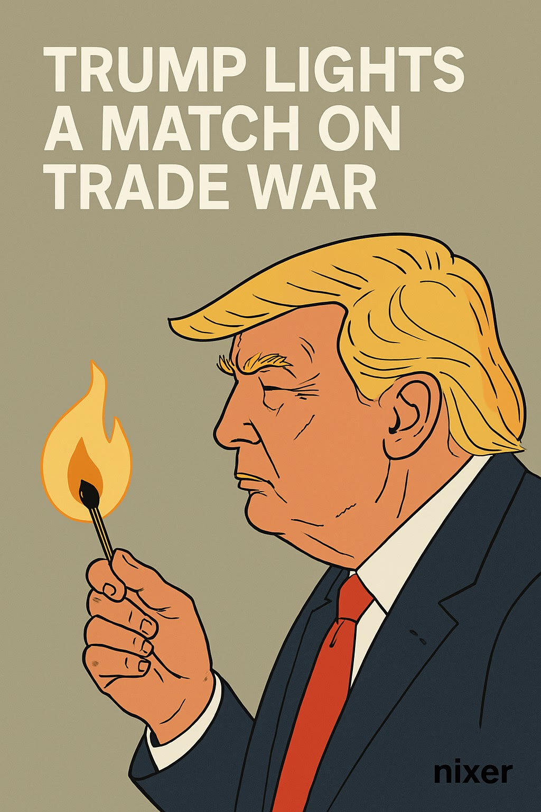

Trump’s New Tariffs: Trade Policy or Power Play?
Published: April 4, 2025
On April 2nd, Donald Trump, now in the thick of his 2024 re-election campaign, dropped a trade bombshell: sweeping new tariffs under what he called “Liberation Day.” The move sent shockwaves through global markets and reignited fears of a renewed trade war, this time at a much more aggressive scale.
The headline: a 10% baseline tariff on all imports, with massive country-specific hikes:
- China: 54%
- EU: 20%
- Japan: 24%
- South Korea: 25%
- Taiwan: 32%
Trump framed the policy as a way to “rebalance global trade” and punish countries he claims are “taking advantage of the U.S. system.” Critics see it differently.
Global Response
The response was swift and mostly negative. Allies warned of retaliation, and China hinted at economic countermeasures. Markets dropped hard — $3.1 trillion in value wiped out in a day.
Market Fallout
The Dow Jones dropped 1,679 points—its worst day since the COVID-era crash in 2020. The S&P 500 fell nearly 5%, and the Nasdaq dropped close to 6%. Stocks like Apple and Nike, deeply embedded in global supply chains, saw major hits.
Economic Outlook
Economists warn this could lead to stagflation: stagnant growth and rising inflation. UBS predicts U.S. growth could drop by 2 points, with inflation climbing above 5%.
Nixer’s Take
Trump’s tariffs aren’t just about trade — they’re a symbol. A flex. A signal of how unstable the world’s economic architecture really is. This feels less like economic strategy and more like political theatre — but with serious global consequences.
AI helped me look back at similar moments in history — especially the 1930s Smoot-Hawley Tariff Act. The parallels? Uncomfortably close.
Sources
This post was researched and drafted with the assistance of generative AI tools and publicly available sources, including: